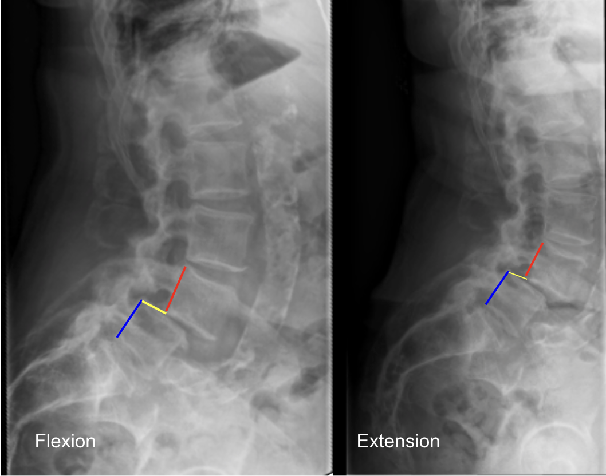

Adapted from: Murphy A, Campos A, Er A, et al. Lumbar spine (flexion and extension views). Reference article, Radiopaedia.org (Accessed on 04 Dec 2025) https://doi.org/10.53347/rID-58306
1) Description of Measurement
Lumbar translation refers to the anterior-posterior displacement of one vertebral body relative to the adjacent vertebra during flexion and extension. It is used to assess lumbar segmental instability, commonly due to degenerative spondylolisthesis, facet arthropathy, or ligamentous incompetence.
Measurement is performed at the posterior vertebral body margin, comparing flexion and extension lateral radiographs.
2) Instructions to Measure
3) Normal vs. Pathologic Ranges
Key Point:
Thresholds most often cited for surgical-grade instability: ≥ 4 mm or ≥ 8% vertebral body width at L4–L5
4) Important References
White AA & Panjabi MM. Clinical Biomechanics of the Spine. Lippincott; 2nd ed. 1990.
Dupuis et al. “Flexion-extension radiography for instability in degenerative spondylolisthesis.” Spine. 1992.
Iguchi et al. “Instability and low back pain in degenerative lumbar spondylolisthesis.” Spine. 2004.
5) Other info....
Consider also measuring:
Instability assessment complements angulation measurement (segmental rotation)
Always specify: